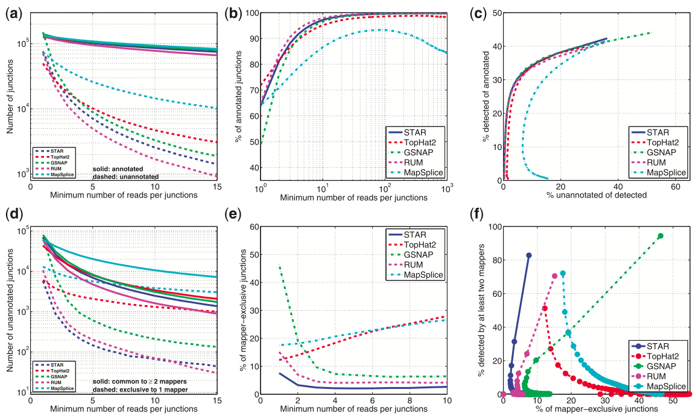

A Bioinformatics Paper Review

By Craig Sketchley
Motivation
The Problem: RNA-Seq

RNA-seq: sequencing the mRNA within a cell at a given point in time:
- Identify where in the genome
- Characterisation of gene expression
High-throughput sequencing challenging to detect & characterise spliced transcripts
Two key tasks:
- Accurate alignment
- Mapping sequences from non-contiguous regions
Further challenges include presence of multiple copies of exons
Background
Current Algorithmic Solutions
Offer compromises in either accuracy or resources required
Computational component becoming bottleneck
Mostly designed for short reads (≤ 200 bases)
Not great for "Third Generation Sequencing" (potentially full length reads)
What is STAR?
"Spliced Transcripts Alignment to a Reference" (STAR)
Specifically designed to align non-contiguous sequences to a reference genome
Method
Overview
The STAR algorithm consists of 2 main steps:
- Seed Search
- Clustering, stitching & scoring
Method
Seed Search Algorithm
Searching for seeds involves a sequential search for the Maximum Mappable Prefix ($MMP$).
The $MMP$ is calculated as follows:
Given a read sequence $R$, read location $i$ and a reference genome sequence $G$, the $MMP(R,i,G)$ is defined as the longest substring $(R_i,R_{i+1},\dots,R_{i+MML-1})$ that matches exactly one or more substrings of $G$, where $MML$ is the Maximum Mappable Length.
Method
Seed Search Example

The search is implemented using a suffix array for the reference genome; the read sequence is then threaded through.
Method
Clustering, Stitching and Scoring
Cluster seeds around a selected anchor seed.
Anchor seeds are selected by minimising the number of genomic mappings.
Results
Method
The paper compared STAR 2.1.3 results with 4 other popular RNA-seq mappers:
- TopHat 2.0.0
- GSNAP 2012-07-03
- RUM 1.11
- MapSplice
Results
Performance on Simulated Data

Simulated data allows for accurate expected results.
All aligners were run in de novo mode with default parameters.
"All aligners exhibit desirable steep ROC curves at high values of detection threshold."
"At the lowest detection threshold of 1 read per junction, STAR exhibits the lowest false-positive rate while achieving high sensitivity."
Results
Performance on Experimental Data
Write about the results...
Results
Speed Comparison
Tests completed on a "two 6-core Intel Xeon CPUs X5680@ 3.33GHz and 148GB of RAM".
All mappers were run with default parameters on the ~40 million 2 x 76 Illumina human RNA-seq dataset.
Results
Experimental Evaluation

Write about the results...
Discussion
Aligning non-contiguous RNA-seq data to a reference genome is hard. It's still unsolved.
STAR is a stand-alone C++ RNA-seq mapper.